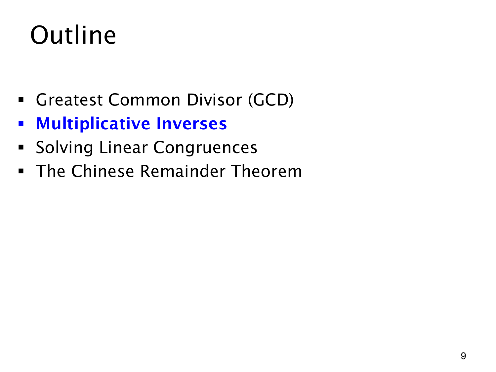

L1.13 · 第 9 页讲解原文
查看这一页课件

Bézout 等式怎样联系到逆元
模 4 时，3 有乘法逆元，2 没有。现在多了一个工具：Bézout 定理能把 GCD 写成两个输入的整数线性组合。接下来要看这样的组合何时给出模 m 乘积为 1 的元素。
普通整数等式负责构造系数、完成证明；将等式放到指定模数下解释，便得到同余结论。这两个层次需要分清。
目录中蓝色的 Multiplicative Inverses（乘法逆元）表示开始这一步。逆元是后面求解线性同余方程和学习中国剩余定理所需的工具。